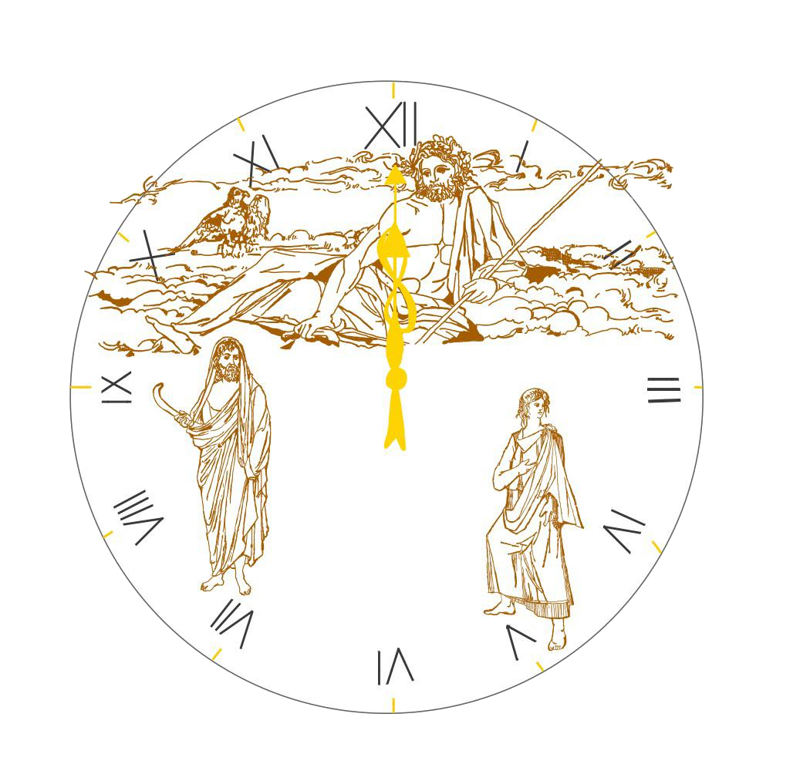

Tempo rimanente blocchi:
Che cos'è Saturniusiometro? Saturniusiometro è formato dalle parole Saturn che rimanda al dio romano Saturno del tempo; Ius che rimanda al termine latino che significa giustizia, qualità del dio Giove; Io che è una ninfa della mitologia greca amante di Zeus, re degli dèi. Si tratta di un cronometro in grado di spezzettare un'unità di tempo in più tempi. Il risultato è compiere la propria attività in modo intrigante (quasi come faresti per risolvere in tempo un puzzle di un gioco!) costringendoti a: aumentare la concentrazione, velocizzare le tue attività, non pensare troppo e lasciare far fare al tempo il resto (un antidoto ad un particolare perfezionismo controproducente).
Possibili usi:
Ripetizione per un esame. Questo cronometro è ottimo per ripetere ad alta voce molte pagine di un libro o di un riassunto di un libro. Mettiamo il caso che per ripetere una pagina di un testo tu ci vuoi impiegare 10 minuti e che hai a disposizione soltanto 1 ora del tuo tempo. Ti basta impostare 6 blocchi da 10 minuti ciascuno. Quando ti accorgerai di averne finito uno, quando cioè i 10 minuti saranno passati, farai un clic su "Termina blocco".
Ciononostante è naturale (e qui sta l'elemento umano proprio della ninfa Io!) che tu abbia bisogno di qualche secondo o minuto in più prima di terminare la tua pagina e quindi il tuo blocco. In tal caso, niente paura! I tuoi secondi verranno proporzionalmente rimossi dai prossimi blocchi che invece di essere di 10 minuti saranno di qualche secondo o minuto in meno.
Bada bene che non c'è un suono che segna il termine del blocco in modo che tu non ti distragga*. La sfida, se così vogliamo chiamarla, sarà quella di arrivare a totalizzare almeno un'ora di studio: il tuo piccolo obiettivo che ti renderà soddisfatto e ti farà crescere nello studio! E se vuoi sospendere e riprendere dopo la tua sessione di ripetizione? Basta premere il pulsante "Pausa"!
*È probabile che potrei inserirlo più avanti, soprattutto all'insegna dell'accessibilità di persone che non vedono o che preferiscono non guardare troppo il PC. Sarebbe però completamente opzionale!